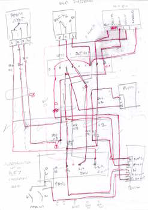
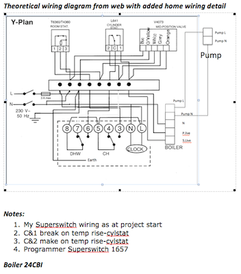
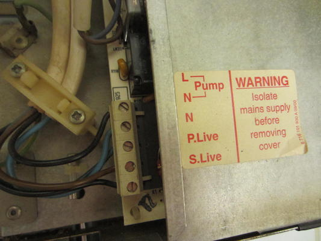
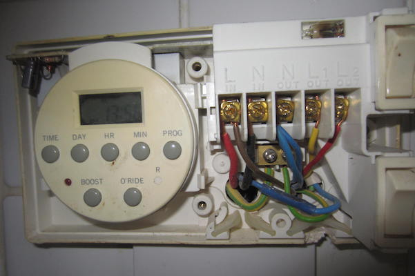
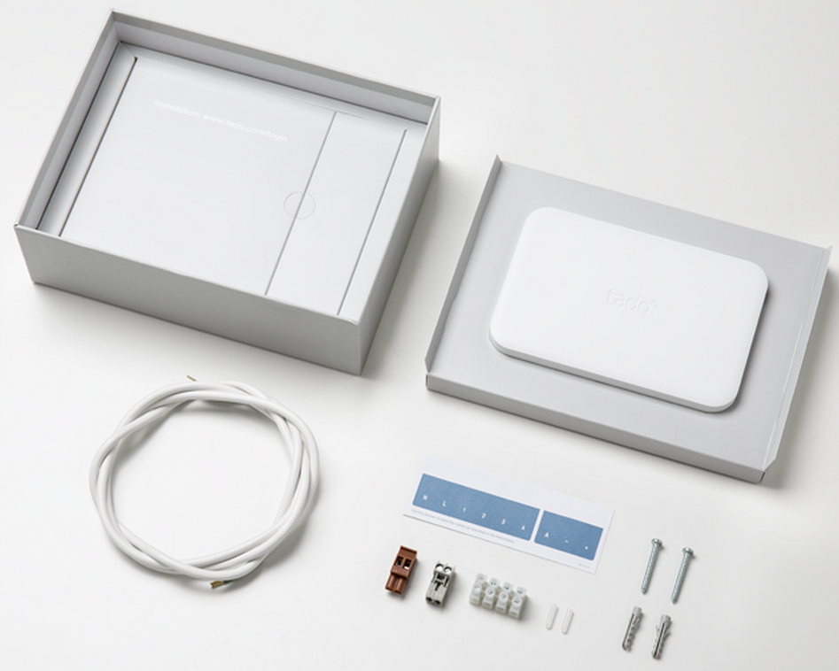
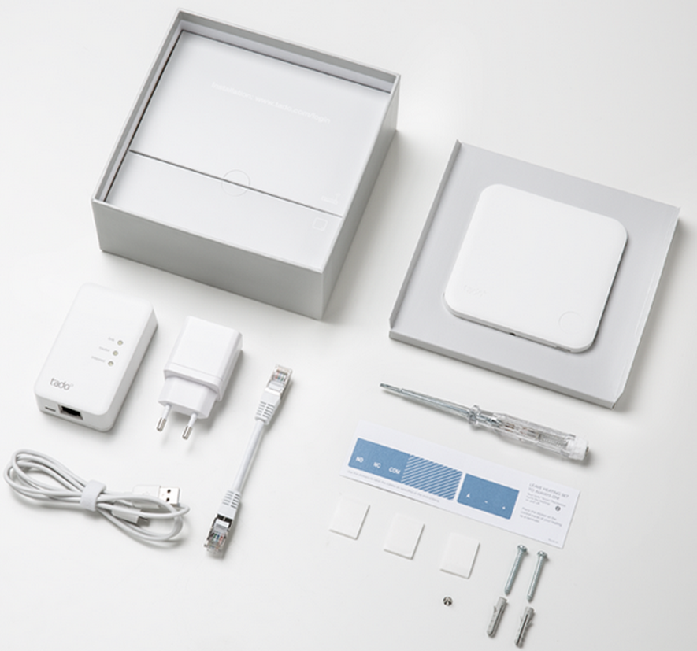
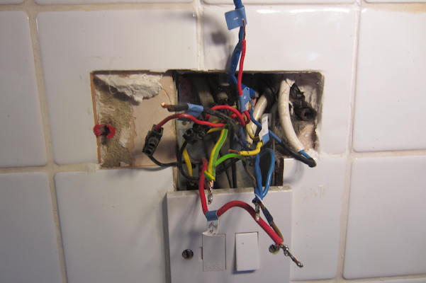
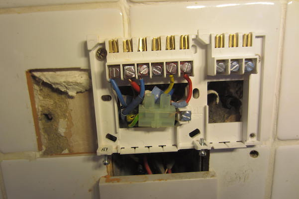
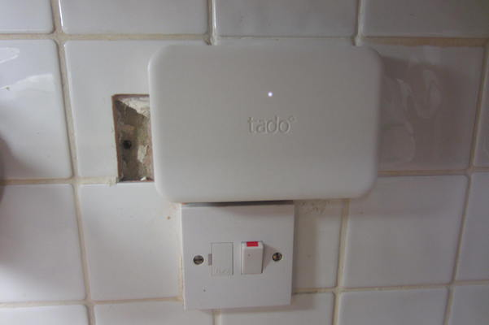
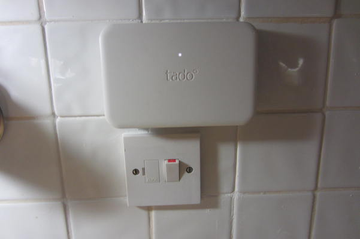

I need a smart thermostat

I had been noticing for some time the growth of a number of smart thermostats such as Hive and Nest. I was going away for the month of December and needed the comfort of knowing that all the pipes in the house were not freezing up whilst I was away. Previously, when away in winter, I had reset the central heating timer so that it came on a couple of times a day to ensure the house did not freeze. This was a very uneconomic way of dealing with an absent owner so I decided to get a smart thermostat that I could control while on the other side of the planet. I read everything I could about the various systems and the one that stood out was Tado. Produced by a German company it seemed to tick all the boxes for my personal requirements of being an absent owner during UK winter. Just one of the cool things about Tado was that you could rent their system and exit at any time so if it did not work for me then I would not lose too much money. So I filled in the online web order and got myself ready:
Preparation for the Tado install
Before I received the kit I needed to do some serious research which was basically understanding my existing controller wiring in order to be confident about installing the Tado, here is my rough sketch and then the drawn up version:
As you can see my existing system has a cylinder stat, a room stat and a valve position controller Drayton V4073, all this is controlled by a Superswitch 1657 controller located near the boiler which is a Worcester Bosch 24 CBi.
 Here are some photos of the wiring at each of the locations, boiler, controller, and airing cupboard junction box. As you can imagine it was a right old job producing a diagram hence the much modified drawing you see above.
 
One of the things I found out in my research is that my system is based on the Sundial 'Y' plan format, this diagram was the template I used to understand and then install the Tado against.
My rationale and justification for the items I ordered from Tado
This is what I ordered:
The extension kit is an additional cost item on top of the smart thermostat and wireless bridge that comprise the basic kit. I wished to have fully independent control of my heating and hot water, I could not do this with the basic kit which turns on the hot water every time the heating is on. The extension kit basically replaces the existing central heating controller which is why it is very important to fully understand the wiring of your system. Of course there is an easy way out of this which is to pay Tado £80 and have them install it for you. I personally enjoy the sort of challenges posed by this install and also enjoy saving money through my own efforts. The included bridge kit is to provide a wireless connection between the internet the extension box and the smart thermostat. It must be stressed here that this NOT a wifi connection but uses a much lower frequency in the 800MHz band for this link rendering it less likely to have interference issues and also to penetrate more easily through the fabric of the building.
Installing the Tado
Prior to actually installing the hardware Tado will query the details of the existing setup and how you plan to use it. This then enables them to send you detailed instructions for your particular system. I had already established that my system was wired according to the Sundial 'Y' plan and understood exactly how I was going to wire the extension kit.
It is important to note that I wanted fully independant control of my hot water and also I wanted to be free to install the smart thermostat wherever I liked. One of the elements of this flexibility was to instruct Tado that I did NOT wish to replace my existing room thermostat (situated in the entrance hall) with the smart thermostat, in fact if I remember correctly I told a white lie and said I did not have a room thermostat at all. This way Tado did not send me unecessary instructions for wiring the smart thermostat. In operation I run my system with the old room thermostat permanently on but vest control of the system to the Tado smart thermostat, before Tado the hall thermostat was set to fully 'on' and temperature control was down to thermostatic radiator valves in every room. Having a portable smart thermostat means that I can experiment with siting the thermostat in different locations to find the most effective position for it.
It took about a week from the time of ordering for the kit to arrive and this is what I received in the package:
One extension kit:
One smart thermostat:
You will note the little white box with three LED's is also included, this is the wireless bridge that plugs into your router
As I knew how I was going to connect up my existing wires to the Tado extension kit there was nothing to it but to go ahead and remove my existing heating controller, the Superswitch 1657. This left me with a gaping hole and a bundle of wires to deal with as you can see.

I used the labels supplied by Tado and had a bit of fiddling and joining to do before I could drill the mounting holes and connect up the extension kit backplate adaptor but eventually I got it done. Once I had the extension box installed on the backplate and tested I could make good the tiling as you can see in the final picture.
  Tado in operation
At the time of writing I have had Tado in operation for almost three months and can say that I am delighted with its performance in general. With the phone app installed it enables easy control of the heating from wherever you are (in my case Australia and Madeira!) and gives confidence that with plummeting temperatures the house will not freeze. Tado senses the location of signed up dwelling members and adjusts the heating acccording to them being at home or away. This action results in energy savings through not heating an empty home. I have not evaluated, as yet, what these savings maybe, due to not having a stable occupancy however I will be doing some like for like comparisons with previous energy useage in the near future.
Things to get used to
1. The default hot water setting at system switch on is that hot water control is disabled (even if you have purchased the extension kit) and greyed out, do not panic, a quick call to Tado control will result in this feature being enabled.
2. Once you have the system up and running you are more or less on your own, Tado (surprisingly) do not provide any detailed operating instructions although the Customer Support line is excellent.
3. You can schedule the home time/sleep time and hot water schedule just as you would a normal central heating programmer. Big difference here is that the time you set is the time to be at that temperature NOT the time the boiler switches on. I learned this the hard way when I awoke at 0530 on the first full day of operation to hear the boiler firing. I had set the daytime temperature to come on at about 0700 so Tado was getting things warmed up to be at the set temperature at 0700. Perfectly reasonable when you know!
4. Such things as night time setback temperature, room temperature, scheduling Tado seems to think are intuitive. I think a quick start guide would save many calls to their Customer Support line.
5. Do not expect Tado to be a miracle worker, it cannot 'learn' such things as an occasional holiday trip out of the country. It has on one occasion set back the temperature to 16.4 Deg C when we were only two hours away from home and it was -2 Deg C outside. It would have needed a boiler the size of a planet to raise the house temperature by 6 Deg C in two hours!! These settings can be adjusted by Tado Support if you ask them. However I am still trying to understand the radius of the geofence temperature rings in order to get this right. Expect to occasionally 'take over' and put it into Manual and set the temperature before you return home, otherwise you may be disappointed with a cool house on arrival at your front door.
Conclusions
I unequivocally recommend Tado to all but those uninspired and disinterested in techno gadgetry. However I am sure Tado would do a good job if one paid for their installation engineer to call and left it entirely up to them. I believe it is a more fun project for those who would describe themselves as 'early adopters' who are prepared to put in a bit of time understanding the system, its benefits and occasional quirks. If anyone reading this wishes to make contact on Tado matters please email me at john@johnmerrifield.com